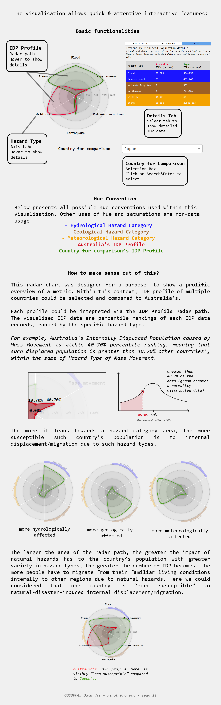

Is Country more susceptible to Natural Disaster Displacement than Australia?
Data period: 2008 - 2021. Only shows countries with Internally Displaced Population of over 10k people
Country for comparison
Internal displacement population (or IDP) migration data provides insights into displacement patterns caused by six most impactful (measured in IDP): floods, mass movements, volcanic eruptions, earthquakes, storms, and wildfires. Analyzing this data helps understand the impacts on different countries.
The visualised data filters out countries with less than 10,000 displacements (people) which allows a better focus on regions needing immediate attention and possible support, which is then compared with the existing metrics of Australia.
By ranking countries in different disaster categories based on percentile ranks (presented as percentages), it is possible to identify relative scale of IDPs within different regions.
Data retrieved from IDMC Portal (2022)
Internally Displaced Population details
visualised data represented in "percentile ranking" within a Hazard Type, tabular detailed data presented below in unit of IDP.| Hazard Type | Australia IDPs (person) |
Country IDPs (person) |
|---|---|---|
| Flood | ||
| Mass movement | ||
| Volcanic Eruption | ||
| Earthquake | ||
| Wildfire | ||
| Storm |
